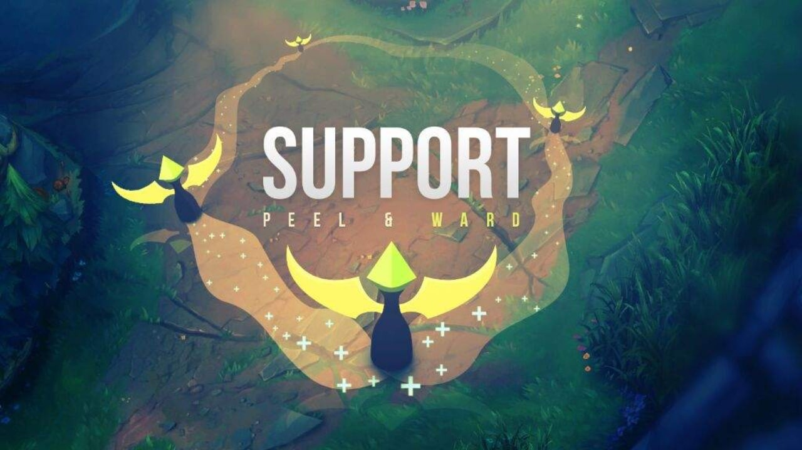
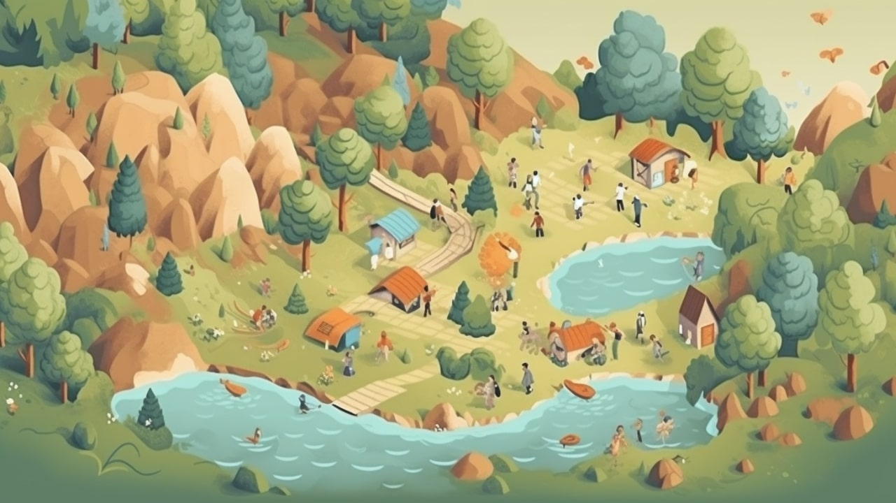
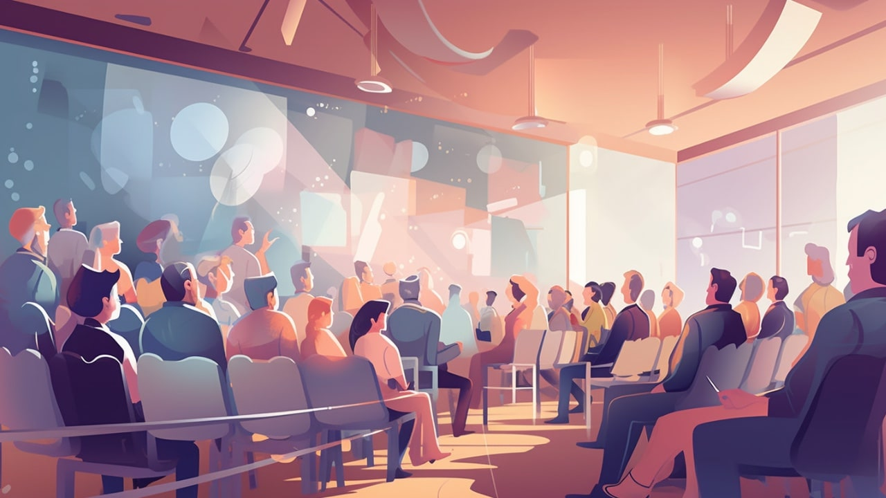

2023 年第三季度总结
这里记录下第一季度自己的一些想法，为了日后翻阅方便！
- 七月
- 桶川跟踪狂杀人事件
- 房思琪的初恋乐园-
- 你们被什么书改变了？
- 如何应对内卷
- 最好的选择是不做选择
- 普通人癌症自救指南
- 大数据已死
- 八月
- 暗时间
- 如何选择在那个公司工作
- 为什么软件变得复杂
- 穷孩子与不对称性
- 维的未来是平台工程
- 时间和项目管理
- 九月
- 走出唯一真理观
- 四十年编程感想
- 程序员不需要过分担心裁员
- 我的红队三年生涯
- 程序员工作经验
- 为什么学习微积分
七月
如何成功的聊天，学习其中的经验！
当别人着急卖给你什么，多半是骗子，当别人分享成功或失败的经历，你可以从中借鉴。
- 骗子只会给你正向建议，告诉你怎么做
- 没有人知道应该怎么做，但你可以通过不做什么而成功

一 桶川跟踪狂杀人事件
被害人不一定完美，但是加害人，一定有罪。 - 链接
多么讽刺，寻找到真相的，是一名平凡的纪实记者。可也多么庆幸，正是因为清水洁如此坚持不放弃地调查和追踪并且率先找出了真正的凶手，我们才可以让猪野诗织的冤屈得以真相大白。警方的手里明明掌握着最好的资源，可以把咨询整合在一起，也有足够的人手，可偏偏一直追求着真相的，不是警察，是记者。
真的令人非常震惊，这种发生在 1999 年的事情，这种对于女性的恶意，竟然过了二十年，也没有一丝一毫的改变。毕竟因为这一起案件获得了强烈的社会反响，甚至推动日本《跟踪骚扰行为规范法》的出台。
当真相大白的时候，猪野诗织的父亲再一次接受了记者的采访，在经历了警方无所为、失去女儿、被媒体伤害之后，他终于留下了这样一番话：「我的女儿被杀害了三次。第一次是罪犯，第二次是怠于调查的警方，第三次是伤害她名誉的媒体。」
二 房思琪的初恋乐园
性、谎言和日记本 - 链接
- 性
这就是林奕含在访谈中所讲到的 「文学之巧言令色」，这在李国华身上，表现为「性暴力之实施与对性暴力的矫饰及合理化」，而在房思琪身上，表现为「遭受性暴力之痛苦和为消解性暴力而尝试的合理化」。
- 谎言
文学谎言帮助李国华逃离的第一个牢笼 —— 法律制裁。同样，谎言也帮助李国华逃离了另一个牢笼 —— 道德，或曰，良心制裁。
- 日记本
- 房思琪与房思琪的对话，通过日记表现。记录了自己遭受性侵后的痛苦和思想折磨，还有自己的勇敢反思；
- 房思琪和刘怡婷的对话，通过刘怡婷阅读房思琪的日记表现。记录了自己朋友遭受性侵后没有及时发现并帮助到她，反而造成二次伤害的悔恨，以及因共情而产生的愤怒和痛苦；
- 读者与文中场景的对话。虚实交错，文里文外，作品引发了读者此刻的感受，而这感受在我身上是难受和压抑。
三 你们被什么书改变了？
读书不要为了公里，而要为了喜爱！- 链接
小的时候，好像总有人不断地在我们耳边提醒着，要多读书啊，要多开阔视野啊。说的最多的，肯定是我们亲爱的老师了。
以前每到寒暑假，老师们总会在作业里布置一本经典名著的阅读，不仅要读，还要写读后感。这是我学生时代最头疼的假期作业了，晦涩难懂的文字读起来真的让人昏昏欲睡，深刻隽永的主题又哪里是我们这些小孩儿花上一点时间就能理解的呢？所以，读后感注水量也是相当高的。
老师们读到我们精心「炮制」过的读后感，总是会苦口婆心地告诉我们，现在不想读、读不懂没关系，但要记住这些书，或许将来有一天，我们需要用到它。
我很好奇，老师像我们这么大的时候就喜欢读书了吗？他们都喜欢什么样子的书呢？又是什么样的书影响了他们的人生，最终让他们变成影响我们的人呢？
四 如何应对内卷
面对内卷的策略是什么？- 链接
什么叫做卷，其实就是在浅层次的同质化的竞争。其实并不是今天才有卷，互联网的 996 加班文化就是卷出来的。这就是低层次的卷，我倡导的是努力，是做出有意义的努力，而不是低层次的比较。
- 要摆脱低层次的卷
在任何环境中我们都可以观察，我认为在任何一个不断变化的环境中，终身学习者只能占 1%。我的结论是，由于你是一个终身学习者，你可以秒杀在任何一个领域里你的同侪。终身学习者是没有极限的。
如果你只想卷，只想在同一个层次竞争，你肯定是无法长期保持优势的。你会疲于奔命。第一招解决方法是，做一个不断变化环境中的终身学习者，不断进步，随时秒杀同侪，进入另外一个层次的竞争。
- 要不要躺平？
目前看起来，你可以躺平，你的收入稳定，你觉得压力不大。然而社会一直在进步，经济一直在发展，从长期看货币一定会贬值。
更重要的是年轻人刚刚进入社会的时候，一切都是白纸，是人生最快的成长阶段，这个阶段如果躺平，很快就会被同侪抛到脑后。如果想有所成就，这一个阶段始终都需要经历。
想不内卷，先学会摆脱低层次的竞争，不要躺平，少问值得不值得，多想我怎么去构建，可以长期使用的，我的技能库，才是道理。
五 最好的选择是不做选择
面对选择的策略应该是什么？- 链接
- 职业生涯的选择
如果你还没毕业，可以更多的参加实习，更多的进入真实的职场去历练。那点实习工资，那可以在简历上写的几笔，并没那么重要，更重要的是，你可以开始了解行业了，了解你的目标应该怎么定，你的价值应该怎么评估。
- 应该如何选择未来的路
世界会如何发展，行业怎么变化，某公司明年会不会裁员？我们无从判断，也无法去应对。该怎么办？遇到老虎我们应该怎么办？遇到狮子我们该怎么办？
其实你在职场中遇到的问题往往是你们一堆人遇到了老虎，你应该如何应对。答案是买双好跑鞋，或者早就练好跑步。不是那个落在最后的人就对了。
你天天担心经济形势不好，公司裁员。但是这是我们普通人能左右的么？我们能做的是什么？所以，世界怎么发展，自有他的路径，我们无法左右。我们并不是靠选择，而是靠准备，所以无需想太多。因为天生我材必有用，前提是准备，是材，并不是洞悉天机，知道一切最正确的选择是什么。
六 普通人癌症自救指南
28 岁确诊癌症，我如何积极自救！
无国界病人30 岁，我消失了 518 天
- 重视体检，不要因为工作忙或者害怕就逃避
- 同时要多了解健康知识，结合自身健康状况和家族病史，酌情增加自费项目。还要记得提醒父母去做肠胃镜检查，即使他们身体健康，也要在
45岁后安排一次。肠癌发展缓慢，症状出现却很晚，从息肉发展到晚期癌症往往会经历5-10年。
- 同时要多了解健康知识，结合自身健康状况和家族病史，酌情增加自费项目。还要记得提醒父母去做肠胃镜检查，即使他们身体健康，也要在
- 在身体健康的时候尽早配备保险
- 买好了医疗险和重疾险，走了一些弯路且自学习一些保险知识，最起码生病起码不用担心经济问题，只要安心治疗即可。
- 病人和家属要有自救意识
- 保持良好的心态
- 抗击癌症是一个持久战，一旦遇上了就只能全力以赴。不要把时间浪费在自怨自艾上，也不用有所谓的“病耻感”。生病并不是病人的错，我们只是运气不好。有时候不幸的事，也会发生在善良的人身上。
人类的一切智慧都包含在这四个字里：“等待”和“希望”。
七 大数据已死
数据量已经不需要特别关注了，再也不必担心处理不了海量数据了。- 链接
- 绝大多数企业到不了大数据级别。
- 企业的数据量往往不到
1TB，很多甚至不到100GB。
- 企业的数据量往往不到
- 存储和计算正在分离。
- 大数据包含”数据存储”和”数据计算”两个方面，如果放在一个系统里面处理，确实很难。但是，这两方面现在已经能够脱钩，变成两个独立系统，各自都能独立扩展。这意味着，”数据计算”不受”数据存储”（数据库大小）的限制，反之依然。因此，大数据作为单一问题就不存在了，变成了海量存储和大型计算两个问题。
- 没有新业务的情况下，数据是线性增长的。
- 即每天的新增数据与以前的数据结构相同，数据计算的需求，其实比数据存储的需求小得多，因为老数据很少需要再次计算。
- 人们看重的往往只是最近的数据。
- 最频繁的查询是针对
24小时内产生的数据，一周前的数据的查询可能性要低20倍，一个月前的历史数据只会偶尔被查询。
- 最频繁的查询是针对
- 真正拥有大数据的公司，几乎从不查询全部数据。
- 他们 90%的查询涉及的数据少于
100MB，涉及TB级别数据的查询非常少。就算查询TB级别数据，查询性能的优先级往往并不高。
- 他们 90%的查询涉及的数据少于
- 硬件的飞速发展，使得单台计算机的计算能力大增。
- 单机的计算能力还比较弱，很多计算必须通过分布式完成。
结论就是：数据量已经不需要特别关注了，再也不必担心处理不了海量数据了。 大数据作为一个技术问题，已经解决了。
八月
没有政治体制改革的成功 经济体制改革不可能进行到底
没有政治体制改革的成功，经济体制改革不可能进行到底，已经取得的成果还有可能得而复失，社会上新产生的问题，也不能从根本上得到解决，文化大革命这样的历史悲剧还有可能重新发生。—— 温家宝，2013 年 3 月 14 日

一 暗时间
看《暗时间》书了解到的一些技巧
- 它的本质是什么
学习这个 Django 技术的过程中，我们学到的是什么？实际上我们学到的就是 Django 框架的一些 API 用法，利用 Django 这个框架写了自己的业务逻辑而已，Django 已经帮我们处理了很多底层的东西，从而快速成型了一个网站。而网站的本质又是什么？实际上就是用户在浏览器中输入对应的 URL，然后服务器对相应的请求进行处理，并返回对应的内容，这本身又涉及到计算机网络很多的基础知识，比如请求都包含了什么，怎样进行逻辑处理，怎样和数据库交互，怎样返回响应，这些 Django 都帮我们做了，我们在写的时候无需关心得这么底层，但我们需要知道这背后发生的事情。如果我们压根不知道 Django 背后发生了什么，只是知道 API 变了，那出现问题的时候，我们根本不知道怎么去追查问题，不可能去从源码级别分析根本原因，也不知道怎么去优化和提速。
很多知识其实背后都有其本质的东西，和一些不变的东西。而越本质的东西基本上变化的情形越少。我们经常会感叹自己跟不上新技术的发展，却往往忽略了这些新技术背后都是什么。现在很多的新技术只是一层皮而已。
那这些技术还有没有更底层的内容呢？有，比如浏览器、操作系统、计算机体系结构、计算机组成相关的内容。越追到底层，越发现其本质越是不变的。除了一些技术相关的本质内容，还有一些不变和永不过时的东西，比如算法和数据结构、基本的程序设计理论、良好的编码习惯、分析和解决问题的能力、强大的学习能力、旺盛的求知欲、良好的思维方式。所以，我们尽量去抓住一些本质的、不过时的东西，这些才是最稳的。
- 第一原则是什么
刚才我们说了，学一个东西我们要了解本质的东西，那么难道我要在学习 Django 框架的时候要把计算机网络、操作系统、计算机组成原理等所有的东西全都挨个学一遍？这得学到猴年马月啊。
所以，我们可以先从大致层面上知道它的本质，知道这个要学的知识在整个知识体系中处于一个怎样的位置上，有一个整体大局观。然后其本质的东西，我们有时间可以重点再一个个突破，因为毕竟这是很多技术的共性。这里就再引出了第二个需要注意的点：我们要知道学习这个东西的第一原则是什么。
比如我要学习好 Django 框架，那么我的原则其实就是学会 Django 的 API 和命令的用法，然后能够利用它搭建好网站，知道它能够做什么，有什么优缺点，有问题了知道怎么查，这是第一原则。在学习的时候，我们按照这个原则来学习，这样整体效率和方向感就会好很多。
“第一原则” 说的是我们学知识的时候我们心里有一个目标和原则和大方向，“了解本质” 是说我们也要知道这项知识它的整体定位和其背后都是什么。至于本质的东西，我们后面可以再慢慢去击破，去慢慢深入了解。
- 知识体系是什么
我们常常会觉得学习一个技术，不知道啥时候是个头，不知道学到哪里了，这其实就是缺乏了整体的知识体系。
一个知识体系可以帮我们在头脑中建立一个整体的框架，其实就像一本书的目录大纲，一门课的思维导图一样，多去了解下这些内容，会帮助我们很好地建立一个知识体系。另外，某些知识可能并没有现成的知识体系，我们也要想办法构建一个知识体系。
这里有一个小技巧，学习一个领域知识的时候，时时把 “最终能写出一篇漂亮的综述” 放在大脑中提醒自己，这有助于我们在阅读中有意无意地整理知识的结构、本质和重点，经过整理之后的知识理解也会更深刻。
二 如何选择在那个公司工作
下注能够持续增加你成功概率的选择
能力到了，选择就没那么困难。能力不到，就是想太多，做得少，欲望太高，能力太低。那怎么通过选择提升能力呢？下注能够持续增加你成功概率的选择。
比如，五年后你想成为一个什么样的人，或者在某个领域达到某种级别，那么就可以评估一下，当下这个选择是不是有助于增加你五年后达成目标的概率，如果是，就选 TA。如果你的目标是在信息流和数据分析领域有所建树，但最终选择了一个高薪币圈的工作，就不是一种下注大概率成功的做法。
比如，从概率论角度，掌握了更多知识的人，总是有更大的机会获得成功。也就是说，你掌握了更多的知识，成事的可能性就更大，因为你并不知道哪些知识会在关键的时候帮你做一个正确的决策。既然是个概率问题，那我们自然要去持续下注大概率事件了，也就是尽可能去学习和掌握更多的知识，比如经济学、统计学、平面设计、排版、最前沿的创业动向、文学、历史，当然还包括技术内容。我去使用更多产品，就能获得更多的产品体验和设计思路。这些知识和经验，也许会在未来给我带来一些看不见的真相和结果，也许什么都没有带来。但谁会在乎呢，只要去持续下注大概率事件就好了。
选择工作，也是类似的道理。
三 为什么软件变得复杂
大公司总有一些难以维护的黑魔法！
任何在科技行业工作足够长的人，尤其是在大公司工作的人，都曾见过下面的场景。有一个遗留系统，很大很复杂，没有人完全理解它是如何工作的。 程序员被要求”修复”系统，没有任何一个可以从系统中消去，每个人都只是加上自己的那部分。
- 客户的需求非常复杂。为了满足这些需求，大型软件不可避免变得复杂。
- 软件公司的管理者真正在意的不是系统的复杂性，而是利润。只要软件能赚钱，高层并不在意软件变得复杂。
- 软件复杂性都落到少数架构师和高级程序员的头上。每个人加上自己的解决方案（方框和箭头），让软件越来越复杂，然后不可避免地，他们就会在一段时间后离开公司。
- 复杂系统最终变得难以理解和维护，唯一的解决方法就是放弃旧系统，从头开始写一个新系统。
所以，诺拉·劳森的结论很悲观：怎么解决软件的复杂性？解决不了。最后就是你走人，公司把软件推倒重来。 这就是一个大厂高级程序员的真实想法。国内的情况其实差不多，上面的描述完全适用于 BAT 内部的复杂系统。
大家通常认为，复杂系统往往会在经济繁荣的时候崩溃，因为业务太多，支撑不过来，但他认为不是这样的，系统崩溃往往发生在经济收缩期。 经济繁荣时期，软件公司会大量雇佣新员工，投入更多的财力和人力，支撑复杂系统。等到经济收缩期，公司开始减少投入、冻结招聘或裁员，复杂系统可能就会在这个时候出问题，变得难以维护。
五 穷孩子与不对称性
大部分人，一生中只有一次试错的机会。- 链接
创业就像那些狂欢节游戏，你来到了游乐场，在那里你投掷飞镖或什么的。
中产阶级的孩子们可以投得起一次。
- 大多数人没有投中
- 少数人投中了目标，得到了一个小奖品
- 极少数人击中了中心靶心，得到更大的奖励，阶层跨越
有钱的孩子可以买得起许多飞镖。
- 如果他们想，他们可以一次又一次地尝试直到他们投中什么并对自己感觉良好
- 有些人继续努力，直到他们击中中心靶心，然后他们发表演讲或写博客文章，谈论”管理的智慧”和勤奋工作带来成功
而穷孩子呢？
- 穷孩子不是在参观嘉年华会，他们是在那工作的人
当我们评论一个人的成功只是运气时，很有可能，他真的只是运气好，或者买得起更多的飞镖。而一个白手起家，没有背景的穷孩子也能干出一番事业，他可能就没有我们想象的那么简单。这样的人身上，一定有着什么常人没有的特质，也就是不对称的地方。
一篇关于寻找不对称的文章，作者列出了三个标准，如果你能找到 不对称 的事情，并在这样的地方努力，才能获得超乎寻常的回报。
- 人们讨厌去做的事情，比如拿不下面子主动交朋友
- 人们不屑去做的事情，比如觉得
Airbnb或数字货币就是笑话 - 人们理解不了的事情，比如
2008次贷危机背后的原理
成功的人会留下线索，他们一定在专注于什么不同的东西。我们要做的，就是找到那些东西。特别是从成功的穷孩子身上。
–
运维的未来是平台工程
掌握核心科技，应对未知风险。- 链接
运维工程师就是管理服务器、保障代码运行环境的人。这是很重要的工作，公司理应非常重视。但是实际上这几年，运维岗位一直在缩减，Ops 工程师被要求转型 DevOps 工程师。
- 运维的由来
最早的时候，并没有运维，程序员同时负责编写和运行软件。但是，编写软件和运行软件，其实是两种不同的技能：前者需要熟悉代码，后者需要熟悉服务器。互联网软件发展起来以后，这两种技能就逐渐分家了。开发工程师负责编写代码，运维工程师负责运行代码。
- 运维的衰落
事实证明，开发和运维分家是一个巨大的错误。写代码的人不了解服务器环境，管理服务器的人不了解代码在干什么，这样不利于做出优秀的产品，也不利于排查问题。因此，有些公司就推动，开发与运维重新合在一起：编写软件的人也要负责运行软件。这就是 DevOps 的由来，它等于 Dev(开发)+Ops(运维)。
另一方面，互联网公司的核心资产和竞争力，更多的是代码，而不是运维。所以，公司也有意愿，把更多的力量投入在开发上，逐步压缩专门的运维团队，积极外包尽可能多的基础设施。这两方面因素决定了，运维作为一个单独的工种，正在逐渐消失。
- DevOps 的问题
但是，DevOps 实际上没有办法取代运维。越来越复杂的业务，注定了系统和基础设施也越来越复杂，同时还必须稳定可靠。
普通的开发工程师，根本不可能做到这一点。他既不了解所有基础设施，也达不到专业运维的系统管理水平。这种情况下，公司就会选择外包，采购外部的云服务，把基础设施外包给专业的云服务商， 最大化压缩自身成本。
- 运维的职责
虽然总体上，运维是管理服务器，但是可以细分成两方面的职责：构建基础架构 + 管理运行环境。”构建基础架构”指的是硬件的采购、安装、上架、联网这些工作。”管理运行环境”指的是保障业务软件的运行。
DevOps 出现后，”构建基础架构”这一职责逐渐消失，变成了采购云服务，”管理运行环境”这一职责则是转给了 DevOps 工程师。于是，新的问题出现了：谁负责采购和整合云服务？
- 平台工程是什么
采购合适的云服务，并不是一件简单的事情。云服务纷繁复杂，各种 API、SDK 和配套工具令人眼花缭乱，即使经验丰富的运维工程师也不容易说清楚。因此，需要有专职人员来做出正确决策，选择一套满足需要的云服务，并且负责编写工具，整合所有采购来的云服务，供业务开发使用。
这种角色就叫做平台工程，他负责评估、采购、整合各种云服务，作为自身的基础设施，并在外部云服务基础上构建自己的平台，让开发工程师能够在其上自助服务，将自己的代码投入生产。
上面的定义有几个要点。
（1）基础设施是外包的，以求成本和开发周期最小化。
（2）平台工程师负责整合外包的基础设施，构建成一个平台。
（3）开发工程师在该平台上，自主搭建和管理运行环境，自己运行代码。
- 平台工程与运维的区别
平台工程与运维，存在几个显著区别。
（1）平台工程需要开发软件，包括编写测试和代码审核，团队的运作方式很像开发团队，有产品经理、甚至设计师和前端工程师。运维一般不开发应用软件，最多就是写一些自动化脚本。以前，有的工程师写代码，有的工程师跑代码。今后，所有工程师都编写代码，并且运行自己的代码，不管你是开发工程师、DevOps 工程师或者平台工程师，不同之处只在于按层或功能划分的职责范围不同。
（2）平台工程是云原生的，所有工作都存在于云上。运维不是云原生的，需要自己管理硬件，只能说是支持云的。
（3）平台工程采购云服务，运维采购的是硬件。
- 运维工程师的出路
随着传统的运维角色的消失，现有的运维工程师必然面临着转型，不外乎有三种出路可以选择。
（1）如果喜欢开发业务软件，可以选择成为 DevOps 工程师。
（2）如果喜欢开发平台软件，可以选择做平台工程，专注于基础设施的整合。
（3）如果更喜欢硬件和底层，可以选择加入”基础设施即服务”（IaaS）的云公司，深入研究基础设施。
六 时间和项目管理
充足的睡眠才是王道 + 合理的项目规划才是王道
[实例一] - https://kivzone.com/weeklycn-04-15/ - 合理性
本周最大的 project 是一个软件工程大项目，要求独立 deliver。这个项目让我感觉到最头疼的地方在于：
- 技术栈的熟练程度导致
troubleshooting比较耗时 - 没怎么写过业务前后端，所以在限时
deliver的时候几乎没有正反馈和心流
在规划中，这个项目大概 15-20 个小时，实际上这个时间被低估了（助教其实不止一次提醒我们 start early，但还是低估了）。体感上本周完全耗在了这上面（>30 个小时）。但实际上，周一周二因为别的事情只 track 了 2 个小时，剩下两天的时间疯狂输出，实际上每天肝了 10 个小时的样子。周二是万恶的本源，为了晚上喝了咖啡，干扰了睡眠，接下来两天的工作专注度显然下降了很多。
总结：
- 看起来最快的方法永远是快糙猛，但是这并不是最有效的做法，即使是看起来并不复杂的全栈项目。相反，
test-driven和提前规划好milestone可能会让这个项目。 - 写业务代码是很
trivial的活儿，但及时如此，GPT和Copilot仍然不一定是对的。supervise和test的工夫一点也省不了。有点理解了 - 睡眠是一个长期无解的事情。我总感觉自己生物钟是按照
26小时算的，但是没办法，还是要多睡觉。睡眠不行了，服用各种刺激前额叶的物质效果也会大打折扣… - 另一个长期无解的事情是有时间的时候不一定有精力，有精力的时候不一定有热情/专注。我在最
energetic的时候也许能学新东西，但是不一定能写code；而感到疲乏的时候，code的质量也不会很高。而这个中间节点就变得很tricky了。
[实例二] - https://laike9m.com/blog/sui-bian-xie-dian,146/ - 持续性/睡眠
- 持续性
大学的时候，大家都会在考前突击复习。由于宿舍熄灯，很多人（包括我）都会去学校附近的咖啡馆刷夜。平时松一点无所谓，必要的时候花点时间冲一把——这种习惯在我开始工作后依然存在。比如某一天睡不着，我可能会直接起来工作到两三点，然后第二天下午再上班。
然而最近两年我逐渐意识到，虽然突击可以带来短期的高效，从长期来看，效果却不如保持稳定的节奏，持续输出。那么怎样算是拥有持续性？
以工作为例，严格地每天八点起，五点下班，这当然是一种 consistency；但如果你早上十点起，晚上加班，这同样是 consistency。又或者，选择每周加两天班，其它时间正常下班。我觉得关键在于找到一种自己舒服的节奏，可以是以天、周，甚至两周为单位，不要去打破它。
从纯粹个人的经验看，持续性可以为制定计划提供依据，比如让你更好地估计某项任务要花多长时间完成。另一方面，它极大地减少了“低能量时期”的出现。不知道大家有没有过，我以前会不定期地出现几天什么都不想干的情况，不要说工作和运动，甚至连游戏都不想打——个人把它称作“低能量时期”。一旦处于这种状态，我基本就只能躺着看手机，别的什么都做不了。一度我甚至怀疑自己是不是有抑郁症。但最近两年，这种情况出现得越来越少。我无法完全肯定（毕竟这不是科学实验），但认为它和持续性的工作状态相关。这方面我不懂所以如果说错请指出，但我猜测生活节奏的起伏（比如某几天突然熬夜）会打破身体里的某种平衡（比如激素分泌、节律、代谢），从出现异常状态。
- 睡眠
有很多因素会影响工作和生活的质量，但如果你问我哪一点最重要，我一定会说是睡眠。
说得更具体点，你的睡眠、情绪、饮食、运动、理财、人际关系，乃至通勤时间，都会极大地影响工作表现。相比英文世界，中文圈子对这方面的关注太少了。—— twitter
九月
我死去的记忆开始攻击我。
大雾重重，时代喧哗造物忙。火光忷忷，指引盗寇入太行。
这些在摇滚精神和改革开放理念下成长的一代人，简中世界互联网的掌门人，作为新中国历史以来最成功的阶级上升案例，又是如何一步一步，从勇者变成恶龙的。

一 走出唯一真理观
让我们无所畏惧地追求我们想要的东西。
所谓的贯通不是用同一套道理概括一切，越是这样笼统地概括，越是无法接近本质，贯通是不同道理之间一种对话的契机。
- 从抽象到具体
对“方法论”和“底层逻辑”的迷恋大概是互联网行业通病。聪明人太多，相较枯燥的执行更愿意去快速了解各种各样的方法论和底层逻辑，倡导快速达成目标和高效率。从这个角度来方法论也是一个 ROI 高、快速达成目标的方法。只要知道底层的方法论，就可以看透一切，所向披靡。
对抽象的“方法论”过度沉迷让人变得傲慢，对复杂的问题简单归因概括，眼高手低，也让人不再愿意俯下身去感知这个世界。支撑结果的大量细节很容易被“至简”掩盖掉，看不到事物的本质，而这被掩盖掉的东西恰恰也是我们需要拆解和深入思考的。
“方法论”是我们理解这个世界的一种方式，三言两语的背后是大量的实践、细节堆砌而成，这些细节和实践让道理变得更厚重、更坚实。如果我们在做事、做人不能做到躬身入局，只是停留在表层，所谓的方法论也只是空中楼阁，沉迷其中只会迷失。
- 学而不思则罔
没有具体的实践就无法托起抽象的方法论。另一方面，如果一味沉迷于执行，也会陷入“学而不思则罔”的境地。
我们还是要靠自己去看、去思考、去问，说到底自己的人生是要自己负责。 知道自己处于公司、业务的什么位置，你做的事情在公司、部门中分别是处于哪一环节？面向的是谁？事情做到什么程度是好的，什么程度是不好？对于判断的标准是否清晰？这件事的关键因素是什么？ 如果我们可以不断地去思考这些问题，相信对于自己工作的意义和职业的规划也会更加清晰。
当你知道了工作的目标是什么，生活的目标是什么，将前往何方，那么脚下的路途也都有了意义，也都可以忍受。 哪怕暂时没有想清楚也没关系，只要思考不停，步履不停，总归会有一个答案。最后，我们不仅要想清楚，还要能和别人讲清楚。想清楚是自己的事情，讲清楚是自己和听众两方的事情。讲清楚也是为了实现图景，不过是另一层面的实现——发动更多人一起做事。世上的事情仅靠自己单打独斗可做的程度有限，我们也要学会把自己的图景描述清楚，影响更多的人，让更多人一起参与进来去实现。
二 四十年编程感想
编程是创造，是创造自己生命的方式。- 链接
- 编程是长期职业
你开始步入这个行业时，应该意识到，程序员是一个长期职业，你可能会从事 20 年甚至更长。你应该从长期角度看待编程。
在长期中，技术来来去去，语言也来来去去，精通一种技术或语言，并不能保证你的长期职业发展。你的目标不必局限在学习什么语言或框架，只要吃透基础知识，你可以学会任何你想要的东西。
- 多尝试不同的事情
你的编程生涯很漫长，刚刚开始时，不要急于求成。你只需要动手写代码就可以了，任何代码都没有关系，写完一个软件，再写下一个。写不同的软件，尝试不同的事情。你会发现，自己需要学习很多不同的东西。你按什么顺序学习它们并不是大问题。
不要变得僵化，抱住某个领域不放。几乎任何学科都可以教给你一些东西。如果你太僵化，抗拒学习其他领域的知识，那你就输了。多学习一些困难的东西，容易发现自己的问题。你可以给自己定一个目标，比如”每周二做一件以前从没有做过的事情”。
- 目标是变得更好
不管使用什么技术，你的目标都应该是动手做出成果，让自己变得更好。
20 年后，你跟别人说：”我是一个拥有 20 年经验的程序员。”别人就会问你：”这 20 年你做了什么？”你的职业生涯最终就是回答这个问题：你问自己，这 20 年我做了什么。
理想的情况是，20 年来，你真正擅长了某件事，而且这件事是社会需要的或者有利可图的，你以某种方式”让它变大”。这样你就会拥有一个成功的职业生涯。
- 继续工作
尽管已经 46 岁，我仍然喜欢编写软件。虽然成为伟大程序员的概率已经为零了，但是在这个年龄，我依然可以完成一些工作。
编程既不是短跑，也不是马拉松，而是日记。在日复一日的累积当中，完成你的事业。作为一名程序员的关键，就是”继续工作”，做出有价值的产品。
三 程序员不需要过分担心裁员
程序员需要担心裁员吗？
与其担心宏观经济，不如关注自己。你对自己生活的影响，往往比宏观经济对你的影响大得多。 公司裁员肯定会对一个人产生影响，但是它决定不了你的未来，你自己才是最大的影响因素。
- 称职的程序员很难招聘
- 公司实际上会尽可能避免解雇程序员
- 已经上线的系统需要维护
- 如果你参与线上系统，除非公司打算放弃该系统，否则不太会考虑解雇你
- 就算公司真的解雇你，你属于有多年项目经验的程序员
- 这种人在市场上是抢手的，不难找到下一份工作，而且工资很可能会增加
- 很多公司不是真的要裁员，而是在调整雇员结构
- 它解雇
4个人，同时新招4个人，经济形势不好只是一个借口 - 所以，就算离开现在的公司，其他正在招人的公司还有很多
- 它解雇
- 如果你不喜欢现在的工作，被解雇其实是一件好事
- 让你有机会去找一份让自己兴奋的新工作
比起其他行业，程序员裁员不算很严重的状况。但是为了预防万一，你可以做两方面的准备：预留一些现金，至少够应付三个月的支出；强化一些方便求职的技能。不过，这两件事是平时就应该做到的，不管你会不会遇到裁员。
四 我的红队三年生涯
你的三年/五年规划是什么？
任何一份工作都是阶段性的，这五年的工作经历中，面对不同的同事都有聊到过一个话题：“你的三年/五年规划是什么？”。
人生都有一个核心的问题：“我从哪里来，我要到哪里去。”我理解这句话的意思应该是我为何来到世间，我要到世间哪个地方去。工作了第 5 个年头我终于理解三年五载的规划代表了什么含义，是想让自己能有一个清晰的目标去奋斗、去改变，即便是自己的认知每天都在提升，也要做一做规划，写一写想法。
五 程序员工作经验
做了 6 年程序员，我学到的 10 条经验！- 链接
- 保持一颗解决问题的心 - 扩大影响力
按照我的观察，那些在工作中用技术取胜的人们共同点都在于他们能保持一颗解决问题的心。他们可以率先想到一种更优的手段解决存在的问题(一般是效率问题)。他们不是嗅觉特别灵敏或者技术特别强，而是当他们遇到了问题，不是把它作为抱怨的话题，而是开始思考这个问题为什么没人解决、应该怎么解决，然后把它实现出来。这种心态在职场上特别稀缺。
工作中需要解决的问题不仅仅在代码上，也有可能出现在非技术问题上。工作中我特别喜欢和非技术同事聊天，了解他们的工作。因为我常常觉得影响项目前进的原因不一定出在我们用了不适合的技术或者不够「先进」的技术。了解非技术同事的工作流程让我大有收获，我会发现他们有一些工作是可以通过写一段程序把原本的工作量做到指数级的下降，而通常非技术同事是很难察觉到的。
她觉得这很不可思议，但这在技术的角度来说太简单了。我也因此了解到，对于不是做技术的人来说，他们很难察觉到哪一些事情是可以用技术解决的，所以我们不能希望他们主动地提出一个需求，只能我们作为掌握技术的人主动地去了解他们。
- 了解你的用户
我自认为自己还算是一个有那么一些产品思维的程序员，因为经常也会写一些自己的小产品。但在刚出来工作的时候，我在工作中太沉迷于技术本身。把心思都放在了诸如怎么重构，怎么改进构建速度之类的问题。我在阿里 P5 升 P6 的答辩中，我被问了一个我至今印象深刻的问题：你有了解你的用户是怎么用你在做的这个东西吗？
这个问题是我从来没有想过的，我哑口无言。可能它只是一个晋升答辩问题模板中的一个问题，但对我来说这个问题让我清醒了许多。
- 不要拿自己的尺子去度量别人
我刚出来工作犯的最大的错误之一就是拿自己的尺子去度量别人。我因为从小对编程痴迷，写程序对我来说是人生中最大的兴趣，我把几乎所有的时间都花在了技术上。当时我天真地认为所有程序员都应该像我这样，对待技术也应该有一种理想主义，我在互联网上结交的技术朋友都是这样的。所以我当时对我的同事特别苛刻，甚至对那些把写程序只当成工作的人嗤之以鼻。后来回想起来，这是非常错误的想法。每个人有每个人的追求，技术也只是多个兴趣爱好的其中一种。在当时别人的眼里我可能是个「怪人」，甚至有点「装逼」。
- 保持学习打开思维
我每天都会在 Twitter 和 Hackernews 发现很多最新的技术和技术思考，我关注了很多开源库的作者，我可以第一时间了解到他们最近在思考什么，在接触什么。这种主动接收会扩大你的眼界，让你在解决问题的时候有更广的思路。
不要只关注自己的领域，学习主要是学习技术背后解决问题的方式，这些解决问题的方式说不准也能应用到你自己的领域。保持学习一直是和同行拉开差距最重要的一点。
- 想清楚再下手写代码
我的一位前老板很了解我，他也是个多年经验的程序员了。有一次我们在讨论一个新东西，他对我说，「不要着急，想清楚了再写」。这句话我一直记在心里。后来每次动手写代码之前，我都会把整个流程的设计先思考清楚，避免了很多不必要的重写。
- 敬畏用户保持谨慎
在写自己的一些没什么人用的开源库或者公司内部用的平台的时候，通常不需要过多思考就能把代码发布出去。但是用户基数庞大的产品，才意识到代码发布和以前所体验到的完全不同。
蚂蚁金服有代码发布的「三板斧」，「三板斧」指的是「可灰度」、「可监控」、「可回滚」。在代码发布之前，要先想想自己的代码是不是符合这三个条件。
- 你的代码发布之后，如果出了问题，是不是可以被监控到的？
- 你的代码是不是可以灰度发布的，而不是一下子全量被推到线上的？
- 代码发布以后，出了问题，是不是可以回滚的？如何回滚？
在经历了用户基数如此庞大的产品开发之后，我对代码发布变得尤为审慎。虽然即使遵守了三板斧，还是会有 bug。但是这种代码发布的思维模式是好的，即使我到了别的公司，我在代码发布前还是会问自己这三个问题。
- 跨团队合作是利益交换
在大公司里，有时在做一个事情的时候，需要别的团队一起合作，或许是用到别的团队的接口、或许是需要别的团队开发新的接口，但这通常很难。我以前天真地以为，只要我们做的事情是有利于业务的，别的团队自然就应该一起合作。但实际上，大家更看中的是这个事情对自己的团队有什么好处。
换位思考一下，我们和别的团队合作，对于他们来说，增加了工作量，增加了风险(带来更高的 qps, 写更多的代码会导致更多的维护成本)。决定是否合作，首先取决于这是否是自上而下的要求，其次就是合作对他们的 KPI 有没有好处。
所以我学会了在游说别的团队合作的时候，首先应该想明白合作能给别人带来什么好处，而不是对事情本身夸夸其谈。这样更容易促成合作。
- 用别人的语言交流会有意想不到的收获
作为一个前端程序员，在和后端程序员商量技术方案的时候，如果可以更多地使用后端的术语，从后端的角度反推前端的想法，他会更容易接受。
- 理解前人写的烂代码
这里的「理解」不是指理解烂代码的逻辑，而是理解为什么会写成烂代码。我经常会听到同事报怨他看到的旧代码写得如何烂，但是实际上很多烂代码产生的原因不是因为技术不行，而是受限于技术的发展和业务的复杂性。
随着自己写的代码越来越多，就越能理解这些「烂代码」的存在。看出来了烂代码，也不要着急去重构，这些代码很有可能藏着一些你不知道的特殊业务需求。如果你不需要碰这些代码，那就尽量别碰。
- 在技术和工作之间找到平衡点
在刚出来工作的前几年，我特别陶醉在把自己学到的新东西试图用在工作中。我的想法是，只有我把这个技术用到实际的工作中，我才算学习了这个技术。
其实这个想法是不对的，学习技术并不一定要求你把他用到工作中。工作就是工作，学习就是学习。工作的内容是为了业务服务的。我在创业公司工作的时候，曾经因为把一个我刚学习到的库用在业务中，因为一些我不知道的坑导致业务进度出了点问题。老板生气地说：业务不是你的试验田。
我后来遇到很多「后辈」(我竟然也开始有后辈了) 请教我说觉得自己在工作中不能运用到自己平时学习的技术，因此觉得自己技术没什么长进。我认为这种想法不太正确。
能把学习到的技术运用到自己的工作中当然是最好的，但这是可遇不可求的事。但是这不代表没有用在工作中，就等于没有真正学习到这个技术。我认为很多人对技术学习有错误的理解，对我来说，学习技术的精髓在于理解这个技术的 Why, What, How. 和能不能用到工作中没有太大的关系。
而工作则相当于是一个真实的场景，是在你学习新的技术的时候，帮助你进行实际思考的场景。你需要有意识地去想，这个技术如果用到我的工作中，它是否适合？它能解决什么问题？它为什么适合？它为什么不适合。当你在学习新技术的时候，结合这个技术，多思考这些问题，这才是真正的学习。
六 为什么学习微积分
为什么面试考察算法，也是同样的道理。- 链接
高中的最后一年，我的学校开设了微积分课。
第一堂课就有学生提问：”老师，日常生活哪里会用到微积分？”
老师回答：”用不到，你永远不会在日常生活中使用微积分。事实上，你们中不少人，在未来的职业中也用不到微积分。”
他看着学生迷惑不解的表情，又说：”你们想知道为什么要学微积分吗？”
我们几个学生点了点头。
他指着班里的一位校足球队的同学问道：”你们经常练习足球，是吗？”
“是的，”学生回答道。”差不多每天都练。”
“教练给你们安排举重练习吗？”
“是的。每周二和周四，我们都要去举重室练习。”
“这是为什么？” 老师问。”为什么足球运动员要练举重？难道是为了在球场上推倒别人吗？”
“不，当然不是。”
“那为什么要举重？”
“因为它让我们变得更强大，”同学说。
“答对了！” 老师说。”微积分也是如此。你学习微积分，不是因为要在日常生活中使用，而是因为它让你的思维变得更强大。”
我从来没有忘记这堂课。